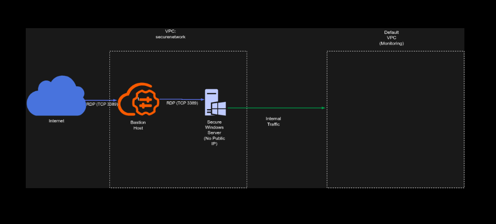

Secure Bastion Host Architecture for Isolated Windows Workloads on GCP
Secure Bastion Host Architecture for Isolated Windows Workloads on GCP
Timeline: December 2025
Role: Cloud Security Engineer
Skills: Google Cloud VPC, Compute Engine, Firewall Rules, Windows Server, RDP, Bastion Host Design, Network Segmentation, IIS
Project Summary
This project focused on designing and implementing a secure administrative access architecture for Windows workloads on Google Cloud Platform (GCP). The objective was to provision a production-style Windows environment in which the secure application server remained isolated from direct external access, while still allowing controlled administrative management through a dedicated bastion host.
The solution used segmented VPC networking, scoped firewall rules, dual-network interfaces, and a bastion-based RDP access path to enforce security boundaries while preserving operational access for administration and monitoring.
Objectives
- Create an isolated VPC environment for secure Windows workloads
- Restrict direct internet access to production servers
- Implement a bastion host as the only externally reachable RDP entry point
- Apply firewall rules to tightly scope administrative access
- Provide internal-only monitoring connectivity through a secondary network interface
- Deploy and validate a Windows web server workload using IIS
Architecture Overview
The architecture consisted of:
- A dedicated VPC network (
securenetwork) with a single subnet for the production environment - A Windows bastion host with:
- one interface connected to the secure VPC subnet
- one interface connected to the default VPC
- an ephemeral public IP for external RDP access
- A secure Windows server with:
- one interface connected to the secure VPC subnet
- one interface connected to the default VPC
- no direct external internet access
- A firewall rule allowing TCP 3389 (RDP) inbound from the internet only to the bastion host using network tags
- IIS deployed on the internal secure host to validate successful administrative access and workload setup

Implementation & Highlights
1. Secure Network Foundation
- Created a new VPC network named
securenetwork - Provisioned a dedicated subnet in the required region for the isolated production environment
- Established a segmented network boundary for secure Windows workloads
2. Controlled Administrative Entry Point
- Deployed a Windows bastion host to act as the controlled external access point
- Assigned the bastion host a public external address for internet-based RDP access
- Restricted ingress using a firewall rule allowing RDP (TCP 3389) only to the bastion host through network tags
3. Isolated Secure Workload Host
- Deployed a second Windows server as the secure production host
- Configured the secure host without direct public access
- Ensured that administrative access could only occur indirectly through the bastion host
4. Dual-NIC Design for Segmentation and Monitoring
- Configured both Windows servers with two network interfaces:
- one attached to the isolated secure VPC
- one attached to the default VPC for internal monitoring connectivity
- Supported management and observability requirements without exposing the secure workload to direct internet access
5. Secure Administrative Workflow
- Reset Windows passwords and provisioned administrative access credentials
- Connected first to the bastion host using RDP from the internet
- Initiated a second internal RDP session from the bastion host to the secure Windows server
- Demonstrated the bastion/jump-host pattern for secure Windows administration
6. Workload Validation with IIS
- Installed Internet Information Server (IIS) on the secure host
- Used IIS deployment as validation that the isolated workload could still be configured and managed successfully through the controlled administrative path
Security Design Decisions
This project implemented several important security principles:
- No direct public access to the secure production server
- Single controlled ingress path through the bastion host
- Firewall scoping with tags to limit RDP exposure
- Network segmentation between secure application infrastructure and external access
- Separate monitoring connectivity using an internal-only secondary interface
- Administrative isolation to reduce the attack surface of production workloads
Results & Impact
- Successfully deployed a segmented Windows administration architecture on GCP
- Enforced controlled RDP access through a bastion host rather than exposing production servers directly
- Demonstrated practical implementation of:
- secure remote administration
- network isolation
- firewall-based access control
- dual-network design for operations and monitoring
- Validated the design by installing and managing IIS on the isolated secure server
Tools & Technologies Used
- Google Cloud Platform (GCP)
- Compute Engine – Windows VM provisioning
- VPC Networking – Secure network isolation
- Firewall Rules – Scoped RDP access control
- Windows Server – Administrative workload host
- Remote Desktop Protocol (RDP) – Controlled remote access
- Internet Information Server (IIS) – Workload validation
Outcome
This project demonstrates the ability to design and implement a secure administrative access pattern for Windows workloads on Google Cloud. It highlights practical skills in bastion host design, network segmentation, firewall scoping, and secure workload management, which are directly relevant to cloud security engineering and cloud architecture roles.